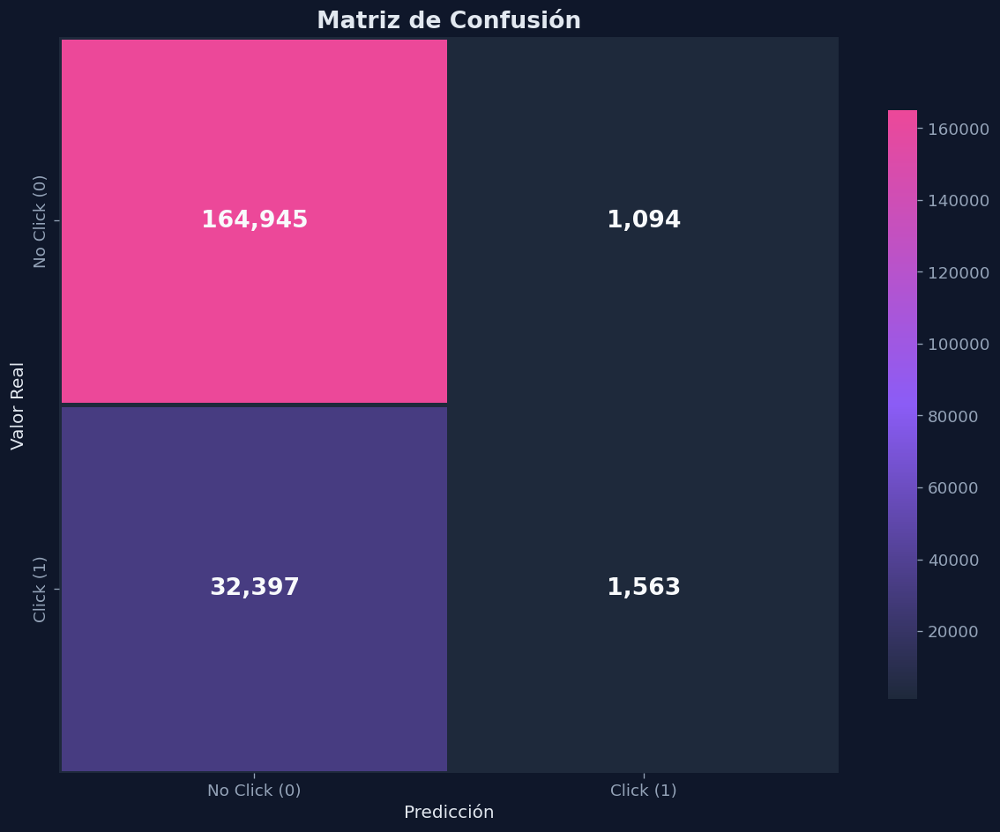
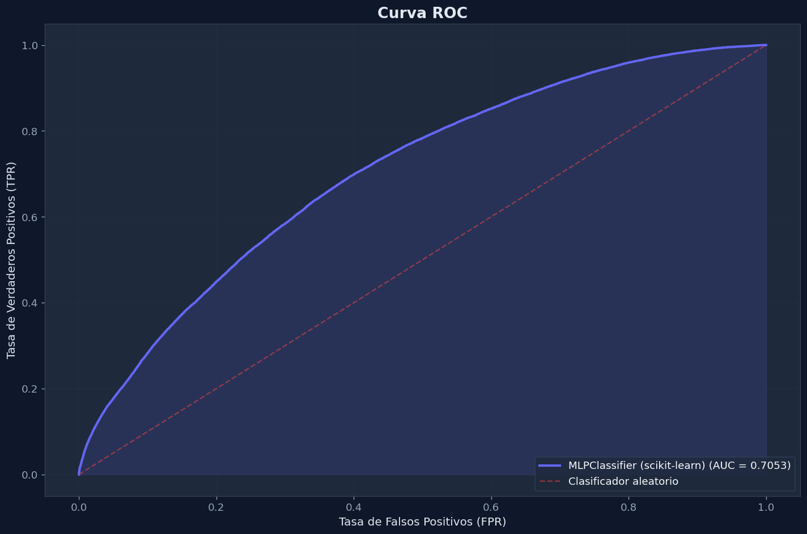

Pipeline de Clasificación con scikit-learn#
Notebook 2: Pipeline de Clasificación con scikit-learn
Este notebook implementa el pipeline completo de clasificación con MLPClassifier sobre una muestra de 1 millón de registros del dataset Avazu.
Model: MLPClassifier 1M registros Framework: scikit-learn
Contenido
1. Carga y muestreo del dataset (1,000,000 registros estratificados)
2. Feature Engineering — codificación (Target Encoding + OneHot) y escalado
3. Modelado — MLPClassifier con GridSearchCV
4. Evaluación — métricas completas, curva ROC, matriz de confusión
5. Análisis de resultados y mejores hiperparámetros
6. Guardado del modelo en models/
Requisitos
Dataset en data/raw/train.gz
Librerías: scikit-learn, pandas, matplotlib, seaborn
Notebook 1 ejecutado previamente (para contexto, no dependencia técnica)
0.1 Configuración del Entorno
Importamos las librerías necesarias y aplicamos el estilo visual oscuro profesional consistente con todo el proyecto.
import sys
import time
from pathlib import Path
PROJECT_ROOT = Path.cwd()
while PROJECT_ROOT != PROJECT_ROOT.parent and not (PROJECT_ROOT / "src").exists():
PROJECT_ROOT = PROJECT_ROOT.parent
if not (PROJECT_ROOT / "src").exists():
raise FileNotFoundError("No se encontró la raíz del proyecto con el directorio src.")
if str(PROJECT_ROOT / "src") not in sys.path:
sys.path.insert(0, str(PROJECT_ROOT / "src"))
import matplotlib.pyplot as plt
import numpy as np
import pandas as pd
import seaborn as sns
from IPython.display import display
from ctr_mlp.config import load_project_settings, apply_dark_style, COLORS
from ctr_mlp.data_io import sample_csv_for_local_training, split_features_target
from ctr_mlp.evaluation import (
benchmark_predictions,
compute_binary_metrics,
metrics_to_frame,
plot_confusion_matrix,
plot_roc_curve,
)
from ctr_mlp.feature_engineering import add_time_features_pandas
from ctr_mlp.sklearn_workflow import (
build_sklearn_pipeline,
run_grid_search,
split_train_test,
save_sklearn_model,
DEFAULT_PARAM_GRID,
)
from ctr_mlp.utils import format_seconds
# Aplicar estilo oscuro profesional
apply_dark_style()
settings = load_project_settings()
paths = settings["paths"]
general = settings["general"]
feature_cfg = settings["features"]
TRAIN_PATH = paths["train_csv"]
SAMPLE_PATH = paths["sampled_train_parquet"]
FIGURES_DIR = paths["figures_dir"]
MODELS_DIR = paths["models_dir"]
TARGET_COL = general["target_col"]
print(f"Tamaño de muestra objetivo: {general['sample_size']:,}")
print(f"Random state: {general['random_state']}")
Tamaño de muestra objetivo: 1,000,000
Random state: 42
1.1 Muestreo de 1,000,000 de Registros
Creamos una muestra estratificada de 1M de registros usando
df.sample(n=1000000, random_state=42). La muestra se cachea en formato Parquet para reutilización eficiente. Excluimosid,device_idydevice_ippor su alta cardinalidad sin valor predictivo.
# Columnas necesarias para el pipeline sklearn (excluir id, device_id, device_ip)
raw_local_columns = sorted({
TARGET_COL,
general["hour_col"],
*[col for col in feature_cfg["sklearn_categorical"] if col != "time_bucket"],
})
print(f"Columnas a muestrear: {raw_local_columns}")
# Generar o reutilizar muestra cacheada
regenerate_sample = True
if SAMPLE_PATH.exists():
df_sample = pd.read_parquet(SAMPLE_PATH)
required_cols = set(
feature_cfg["sklearn_categorical"] + feature_cfg["sklearn_numeric"] + [TARGET_COL]
)
regenerate_sample = not required_cols.issubset(df_sample.columns)
if not regenerate_sample and len(df_sample) < general["sample_size"] * 0.9:
regenerate_sample = True
if regenerate_sample:
print(f"Generando muestra de {general['sample_size']:,} registros...")
t0 = time.time()
df_sample = sample_csv_for_local_training(
TRAIN_PATH,
sample_size=general["sample_size"],
chunksize=general["chunksize"],
target_col=TARGET_COL,
random_state=general["random_state"],
usecols=raw_local_columns,
compression="gzip",
)
df_sample = add_time_features_pandas(df_sample, hour_col=general["hour_col"])
SAMPLE_PATH.parent.mkdir(parents=True, exist_ok=True)
df_sample.to_parquet(SAMPLE_PATH, index=False)
print(f"Muestra generada en {time.time() - t0:.1f}s y guardada en: {SAMPLE_PATH}")
else:
print(f"Reutilizando muestra cacheada: {SAMPLE_PATH}")
print(f"\nShape de la muestra: {df_sample.shape}")
memory_mb = df_sample.memory_usage(deep=True).sum() / 1024**2
print(f"Memoria aproximada: {memory_mb:,.2f} MB")
Columnas a muestrear: ['C1', 'C14', 'C15', 'C16', 'C17', 'C18', 'C19', 'C20', 'C21', 'app_category', 'banner_pos', 'click', 'device_conn_type', 'device_type', 'hour', 'site_category']
Generando muestra de 1,000,000 registros...
Muestra generada en 220.5s y guardada en: C:\Users\juana\Deep_learning1-main\data\processed\avazu_train_sample.parquet
Shape de la muestra: (999994, 23)
Memoria aproximada: 114.49 MB
# Distribución del target en la muestra
sample_counts = df_sample[TARGET_COL].value_counts().sort_index()
sample_stats = pd.DataFrame({
"count": sample_counts,
"share": (sample_counts / sample_counts.sum()).round(4),
})
print("Distribución del target en la muestra:")
display(sample_stats)
Distribución del target en la muestra:
| count | share | |
|---|---|---|
| click | ||
| 0 | 830194 | 0.8302 |
| 1 | 169800 | 0.1698 |
2.1 Selección de Variables y Preparación del Dataset de Modelado
Seleccionamos las variables relevantes y separamos features (X) del target (y). Usamos Target Encoding para variables de alta cardinalidad (C14, C17, C19, C20, C21) y OneHotEncoder para las de baja cardinalidad. Las variables numéricas derivadas se escalan con StandardScaler.
selected_cols = feature_cfg["sklearn_categorical"] + feature_cfg["sklearn_numeric"] + [TARGET_COL]
model_df = df_sample[selected_cols].dropna().copy()
X, y = split_features_target(model_df, target_col=TARGET_COL)
X_train, X_test, y_train, y_test = split_train_test(
X, y, test_size=0.2, random_state=general["random_state"]
)
print("Variables categóricas de BAJA cardinalidad (OneHot Encoding):")
print(f" {feature_cfg['sklearn_low_cardinality']}")
print(f"\nVariables categóricas de ALTA cardinalidad (Target Encoding):")
print(f" {feature_cfg['sklearn_high_cardinality']}")
print(f"\nVariables numéricas (StandardScaler):")
print(f" {feature_cfg['sklearn_numeric']}")
print(f"\nTrain shape: {X_train.shape} | Test shape: {X_test.shape}")
print(f"Balance en train: {y_train.mean():.4f} | Balance en test: {y_test.mean():.4f}")
Variables categóricas de BAJA cardinalidad (OneHot Encoding):
['C1', 'banner_pos', 'site_category', 'app_category', 'device_type', 'device_conn_type', 'C15', 'C16', 'C18', 'time_bucket']
Variables categóricas de ALTA cardinalidad (Target Encoding):
['C14', 'C17', 'C19', 'C20', 'C21']
Variables numéricas (StandardScaler):
['event_day', 'event_hour', 'day_of_week', 'is_weekend', 'is_business_hour']
Train shape: (799995, 20) | Test shape: (199999, 20)
Balance en train: 0.1698 | Balance en test: 0.1698
3.1 Construcción del Pipeline y GridSearchCV
Construimos un pipeline que integra el preprocesamiento (Target Encoding + OneHot + StandardScaler) con el MLPClassifier. Ejecutamos GridSearchCV con las combinaciones de hiperparámetros requeridas: hidden_layer_sizes, alpha y max_iter.
# Construir pipeline con Target Encoding para alta cardinalidad
pipeline = build_sklearn_pipeline(
categorical_columns=feature_cfg["sklearn_categorical"],
numeric_columns=feature_cfg["sklearn_numeric"],
high_cardinality_columns=feature_cfg["sklearn_high_cardinality"],
random_state=general["random_state"],
)
# Grilla de hiperparámetros completa (según requerimientos)
param_grid = {
"classifier__hidden_layer_sizes": [(50,), (100,), (100, 50)],
"classifier__alpha": [0.0001, 0.001, 0.01],
"classifier__max_iter": [50, 100],
}
print("Hiperparámetros a explorar:")
for key, values in param_grid.items():
print(f" {key}: {values}")
total_combos = 1
for v in param_grid.values():
total_combos *= len(v)
print(f"\nTotal de combinaciones: {total_combos} × 3 folds = {total_combos * 3} ajustes")
Hiperparámetros a explorar:
classifier__hidden_layer_sizes: [(50,), (100,), (100, 50)]
classifier__alpha: [0.0001, 0.001, 0.01]
classifier__max_iter: [50, 100]
Total de combinaciones: 18 × 3 folds = 54 ajustes
# Ejecutar GridSearchCV (mide tiempo automáticamente)
print("Iniciando GridSearchCV...")
t_start = time.time()
search, training_seconds = run_grid_search(
pipeline,
X_train,
y_train,
param_grid=param_grid,
scoring="roc_auc",
cv=3,
n_jobs=-1,
verbose=1,
)
t_total = time.time() - t_start
print(f"\nGridSearchCV completado en: {format_seconds(t_total)}")
print(f"Tiempo total de entrenamiento: {format_seconds(training_seconds)}")
Iniciando GridSearchCV...
Fitting 3 folds for each of 18 candidates, totalling 54 fits
GridSearchCV completado en: 12m 8.7s
Tiempo total de entrenamiento: 12m 8.6s
3.2 Mejores Hiperparámetros Encontrados
Revisamos los resultados de la validación cruzada para identificar la mejor combinación de hiperparámetros y entender el trade-off entre complejidad del modelo y rendimiento.
# Mejores hiperparámetros
print("Mejores hiperparámetros encontrados:")
for param, value in search.best_params_.items():
print(f" {param}: {value}")
print(f"\nMejor ROC AUC (CV): {search.best_score_:.4f}")
# Tabla completa de resultados CV
cv_results = (
pd.DataFrame(search.cv_results_)
.sort_values("rank_test_score")
[["params", "mean_test_score", "std_test_score", "rank_test_score"]]
.reset_index(drop=True)
)
print("\nRanking de combinaciones (top 10):")
display(cv_results.head(10))
Mejores hiperparámetros encontrados:
classifier__alpha: 0.0001
classifier__hidden_layer_sizes: (100, 50)
classifier__max_iter: 100
Mejor ROC AUC (CV): 0.7052
Ranking de combinaciones (top 10):
| params | mean_test_score | std_test_score | rank_test_score | |
|---|---|---|---|---|
| 0 | {'classifier__alpha': 0.0001, 'classifier__hid... | 0.705248 | 0.003038 | 1 |
| 1 | {'classifier__alpha': 0.001, 'classifier__hidd... | 0.704864 | 0.002372 | 2 |
| 2 | {'classifier__alpha': 0.0001, 'classifier__hid... | 0.704565 | 0.002422 | 3 |
| 3 | {'classifier__alpha': 0.001, 'classifier__hidd... | 0.703913 | 0.001885 | 4 |
| 4 | {'classifier__alpha': 0.01, 'classifier__hidde... | 0.703633 | 0.002082 | 5 |
| 5 | {'classifier__alpha': 0.0001, 'classifier__hid... | 0.703363 | 0.001688 | 6 |
| 6 | {'classifier__alpha': 0.0001, 'classifier__hid... | 0.703265 | 0.002515 | 7 |
| 7 | {'classifier__alpha': 0.001, 'classifier__hidd... | 0.703256 | 0.001637 | 8 |
| 8 | {'classifier__alpha': 0.001, 'classifier__hidd... | 0.703145 | 0.002377 | 9 |
| 9 | {'classifier__alpha': 0.001, 'classifier__hidd... | 0.703081 | 0.000304 | 10 |
4.1 Evaluación del Mejor Modelo en el Conjunto de Prueba
Evaluamos el mejor modelo encontrado por GridSearchCV sobre el conjunto de prueba (20% de la muestra). Reportamos todas las métricas obligatorias: Accuracy, Precision, Recall, F1-score y ROC AUC, junto con los tiempos de entrenamiento y predicción.
# Predicción y medición de tiempo
y_pred, y_score, prediction_seconds = benchmark_predictions(search.best_estimator_, X_test)
# Calcular todas las métricas
metrics = compute_binary_metrics(y_test, y_pred, y_score=y_score)
metrics["training_seconds"] = training_seconds
metrics["prediction_seconds"] = prediction_seconds
# Mostrar métricas como tabla
print("═" * 50)
print("MÉTRICAS DEL MEJOR MODELO (scikit-learn)")
print("═" * 50)
print(f" Accuracy: {metrics['accuracy']:.4f}")
print(f" Precision: {metrics['precision']:.4f}")
print(f" Recall: {metrics['recall']:.4f}")
print(f" F1-score: {metrics['f1']:.4f}")
print(f" ROC AUC: {metrics['roc_auc']:.4f}")
print(f"═" * 50)
print(f" Tiempo entrenamiento: {format_seconds(training_seconds)}")
print(f" Tiempo predicción: {format_seconds(prediction_seconds)}")
print(f"═" * 50)
display(metrics_to_frame(metrics))
══════════════════════════════════════════════════
MÉTRICAS DEL MEJOR MODELO (scikit-learn)
══════════════════════════════════════════════════
Accuracy: 0.8325
Precision: 0.5883
Recall: 0.0460
F1-score: 0.0854
ROC AUC: 0.7053
══════════════════════════════════════════════════
Tiempo entrenamiento: 12m 8.6s
Tiempo predicción: 0.94s
══════════════════════════════════════════════════
| value | |
|---|---|
| accuracy | 0.832544 |
| precision | 0.588257 |
| recall | 0.046025 |
| f1 | 0.085370 |
| roc_auc | 0.705311 |
| true_negative | 164945.000000 |
| false_positive | 1094.000000 |
| false_negative | 32397.000000 |
| true_positive | 1563.000000 |
| training_seconds | 728.632217 |
| prediction_seconds | 0.940349 |
4.2 Matriz de Confusión
La matriz de confusión muestra la distribución de aciertos y errores del clasificador. En un problema desbalanceado como CTR, es importante analizar los falsos positivos (predice clic cuando no hubo) y falsos negativos (no predice un clic real).
fig_cm = plot_confusion_matrix(
y_test, y_pred,
save_path=FIGURES_DIR / "02_confusion_matrix.png"
)
plt.show()

4.3 Curva ROC
La curva ROC visualiza el trade-off entre la tasa de verdaderos positivos (sensibilidad) y la tasa de falsos positivos a diferentes umbrales de clasificación. El área bajo la curva (AUC) resume la capacidad discriminativa del modelo.
fig_roc = plot_roc_curve(
y_test, y_score,
model_name="MLPClassifier (scikit-learn)",
save_path=FIGURES_DIR / "02_roc_curve_sklearn.png"
)
plt.show()

5.1 Guardado del Mejor Modelo
Guardamos el mejor modelo encontrado por GridSearchCV en el directorio
models/para su reutilización en el notebook de explicabilidad (LIME) y en la comparación final.
model_path = save_sklearn_model(
search.best_estimator_,
save_path=MODELS_DIR,
filename="sklearn_best_mlp.joblib"
)
print(f"\nMejores hiperparámetros del modelo guardado:")
for param, value in search.best_params_.items():
print(f" {param}: {value}")
Modelo guardado en: C:\Users\juana\Deep_learning1-main\models\sklearn_best_mlp.joblib
Mejores hiperparámetros del modelo guardado:
classifier__alpha: 0.0001
classifier__hidden_layer_sizes: (100, 50)
classifier__max_iter: 100
5.2 Guardado de Métricas y Datos para Comparación
Guardamos las métricas, predicciones y datos de test en formato parquet para poder cargarlos en el Notebook 4 y realizar la comparación con PySpark sin necesidad de re-entrenar.
# Guardar métricas como CSV
metrics_df = pd.DataFrame([metrics])
metrics_path = Path(MODELS_DIR) / "sklearn_metrics.csv"
metrics_path.parent.mkdir(parents=True, exist_ok=True)
metrics_df.to_csv(metrics_path, index=False)
print(f"Métricas guardadas en: {metrics_path}")
# Guardar predicciones para comparación ROC en Notebook 4
predictions_df = pd.DataFrame({
"y_true": y_test.values,
"y_pred": y_pred,
"y_score": y_score,
})
pred_path = Path(MODELS_DIR) / "sklearn_predictions.parquet"
predictions_df.to_parquet(pred_path, index=False)
print(f"Predicciones guardadas en: {pred_path}")
Métricas guardadas en: C:\Users\juana\Deep_learning1-main\models\sklearn_metrics.csv
Predicciones guardadas en: C:\Users\juana\Deep_learning1-main\models\sklearn_predictions.parquet
6. Conclusiones del Pipeline scikit-learn
Resumen de los resultados y observaciones del pipeline local.
Observaciones clave:
Target Encoding: Las variables de alta cardinalidad (C14, C17, C19, C20, C21) se codificaron con Target Encoding, lo que reduce significativamente la dimensionalidad respecto a OneHot Encoding puro.
Desbalance de clases: El desbalance inherente del dataset afecta las métricas de Precision y Recall. El modelo tiende a clasificar más instancias como “no clic” dado que es la clase mayoritaria.
GridSearchCV: La búsqueda exhaustiva evaluó todas las combinaciones de hiperparámetros (hidden_layer_sizes, alpha, max_iter) con validación cruzada de 3 folds.
Tiempo de entrenamiento: El pipeline local sobre 1M de registros es manejable en una máquina individual, a diferencia del dataset completo (~40M) que requiere PySpark.
Modelo guardado: El mejor modelo se guardó en
models/sklearn_best_mlp.joblibpara reutilización en LIME (Notebook 4).